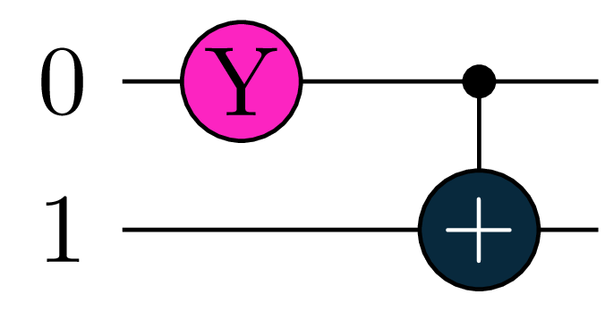

import tequila as tq
U = tq.gates.Ry(target=0, angle=1.0) + tq.gates.X(control=0,target=1)In this tutorial, you will get a brief introduction to tequila circuits.
Initialize Tequila Circuits
Quantum circuits can be initialized in an intuitive way by assembling tq.gates objects (see here for a list of all gates). Take for example:
which initializes a two-qubit circuit with a Y-rotation and a controlled-NOT operation in sequence. All tequila gates can be initialized with the following keywords
target: the target qubit(s) | integer or list of integers
control: the control qubits(s) | integer or list of integers
angle: a parameter for the gate (see below) | float or variable
the angle is optional for some gates that have a defined default value - like X, Y, Z and H.
We can simulate the circuit and get the corresponding wavefunction back. This is convenient, although not the main purpose of tequila
wfn = tq.simulate(U)
print(wfn)+0.8776 |00> +0.4794 |11> In the code block above, we did not specify the simulator to be used, tequila determines this automatically. You can however specify the similator via the backend keyword. If you are not sure which simulators are installed on your system, use tq.show_available_simulators()
Code
wfn = tq.simulate(U, backend="cirq")
tq.show_available_simulators()Parametrization
All tequila gates are parametrized as
\[ U(\theta) = e^{-i\frac{\theta}{2} G} \]
were \(G\) is the so called generator of the gate. With \(G=X\) we obtain the standard \(R_x(\theta)\) rotation gate while with \(G=\left(X-1\right)\) and \(\theta=\pi\) we obtain the standard Pauli-\(X\) gate. In the same way, initializing tq.gates.X(target=0, angle="a") defines the gate \[ e^{-i\frac{a}{2} \left(X-1\right)} = X^{\frac{a}{\pi}}.\]
Usually it is convenient to leave gates like \(X,Y,Z,H\) and \(CNOT\) unparametrized and use parametrized gates generated from single tensor products of Pauli operators. The latter can be viewed as the native gate set of tequila. An example is
U = tq.gates.Rp(paulistring="X(0)Y(2)", angle="a")which initialize the gate \(e^{-i\frac{a}{2} \left(X(0)Y(2)\right)}\).
Parameters that are passed with the angle keyword can be three datatypes
- floats
- strings or any hashable type
tq.Variable- any callable type that returns a float when given a dictionary of variables
we have already seen an example for the first type. Let’s do it again for the other two. Let’s start with strings
U = tq.gates.Ry("a",0) + tq.gates.CNOT(0,1)
wfn = tq.simulate(U, variables={"a":1.0})
print(wfn)+0.8776 |00> +0.4794 |11> note that we need to specify the values of all parameters when we are simulating the circuit. The same example with the tq.Variable type
a = tq.Variable("a")
U = tq.gates.Ry(a,0) + tq.gates.CNOT(0,1)
wfn = tq.simulate(U, variables={"a":1.0})
print(wfn)+0.8776 |00> +0.4794 |11> note here, that the variables dictionary does not need to be initialized with the variable type, the plain names (as hashable types like strings) are enough - in the background this will all be converted to tq.Variable.
For the last datatype, we already saw an example, that is tq.Variable itself, as it can be evaluated
variable = tq.Variable("name")
evaluated = variable(variables={"name":1.0})
print(evaluated)1.0as this alone would be boring, we can manipulate the variable object, here is some example in which we initialize a circuit parameterized by the function \[ f(a) = \sin^2\left(\frac{a}{2}\pi\right) \]
from numpy import pi,sin
a = tq.Variable("a")
f = a*pi*0.5
f = f.apply(sin)
f = f**2
U = tq.gates.Ry(f,0) + tq.gates.CNOT(0,1)
wfn = tq.simulate(U, variables={"a":1.0})
print(wfn)+0.8776 |00> +0.4794 |11> Tricks
Add Controls
You can take one circuit and add control-options to it
cU = U.add_controls([3,4])
Re-Parametrize
UX = U.map_variables({"a":"b"})
UY = UX.map_variables({"b":1.0})
print("angles in U :",U.extract_variables())
print("angles in UX:",UX.extract_variables())
print("angles in UY:",UY.extract_variables())angles in U : [a]
angles in UX: [b]
angles in UY: []Map-Qubits
UZ = U.map_qubits({0:1,1:2})
print(UZ)circuit:
Ry(target=(1,), parameter=f([a]))
X(target=(2,), control=(1,))
Decompose Gates
Tequila can decompose gates automatically (e.g. for differentiation or translation to backend), you can however also do this manually with tq.compile_circuit. The default compiles down to the lowest lever (only standard single qubit gates and controlled-nots). You can specifiy the compile options with keywords like controlled_rotation=False. See here for all keywords.
U1 = tq.gates.H(0)
U1+= tq.gates.Ry("a",0,control=1)
U1+= tq.gates.ExpPauli(angle="b", paulistring="X(0)X(2)")
# let's compile to different levels
U2 = tq.compile_circuit(U1)
U3 = tq.compile_circuit(U1, controlled_rotation=False)
U4 = tq.compile_circuit(U1, exponential_pauli=False)the four circuits are

Get Generators
The generators of individual gates can be constructed with the make_generator function. Here we can include the control qubits in the definition of the generator. Take for example
U = tq.gates.Ry(angle="a", target=0) + tq.gates.X(control=0, target=1)
for gate in U.gates:
generator = gate.make_generator()
print("gate generated by:", generator)
if gate.is_controlled():
cgenerator = gate.make_generator(include_controls=True)
print("including control qubits:", cgenerator)gate generated by: +1.0000Y(0)
gate generated by: +1.0000X(1)-1.0000
including control qubits: +0.5000X(1)-0.5000-0.5000Z(0)X(1)+0.5000Z(0)